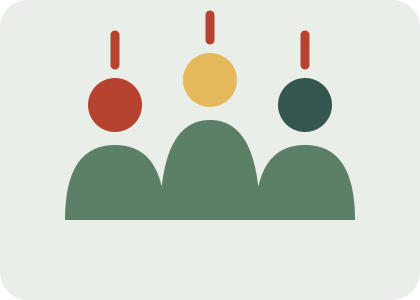

¿Cómo puedes colaborar?
No hace falta formar parte de una organización para contribuir a una sociedad pacífica y justa. Podemos empezar por nuestras relaciones, nuestro centro educativo y nuestro barrio.
La participación ciudadana consiste en informarse, expresar opiniones con respeto, escuchar a los demás y colaborar en iniciativas que mejoren la comunidad.

Cinco formas de participar
- Respeta: escucha a las personas aunque tengan opiniones diferentes.
- Infórmate: consulta fuentes fiables antes de compartir una noticia.
- Dialoga: intenta resolver los desacuerdos sin violencia.
- Incluye: no toleres el acoso ni la discriminación.
- Colabora: participa en actividades solidarias y proyectos de tu comunidad.
Únete a Red por la Equidad
Defender la paz y la justicia es una tarea colectiva. Comparte el mensaje de esta campaña y anima a otras personas a conocer el ODS 16.
«La igualdad se construye cuando nadie se queda atrás».
Mi opinión
Creo que participar en iniciativas como Red por la Equidad es una buena manera de contribuir a
mejorar la sociedad. Muchas veces pensamos que nuestros actos no tienen importancia, pero
colaborar, informar a otras personas y defender los derechos humanos puede generar cambios
positivos. No hace falta hacer grandes cosas para ayudar: pequeños gestos de solidaridad, respeto y
apoyo también cuentan. En mi opinión, todos deberíamos implicarnos más en estos temas, porque
construir un futuro con más paz y justicia es una responsabilidad compartida.